Ponds, Dragonflies & Water Life
Fir Tree Pond, the Marlpit at Rusthall, and seasonal woodland hollows are brimming with aquatic life. Peer into the clear shallows and watch the surface skim with creatures!
Dragonflies & Surface Skimmers

Britain's biggest dragonfly; males have a striking apple-green thorax and sky-blue tail.
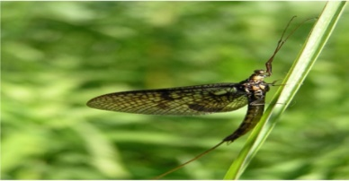
Delicate upright wings and long tail threads dancing above the water in early summer.
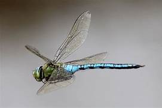
Slender needle-like body; holds its wings closed along its back when resting on reeds.

Shiny black beetle spinning dizzying circles across the water surface in groups.
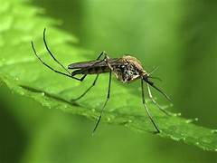
Tiny, thin-legged flying insect whose wiggly larvae grow in still rainwater pools.
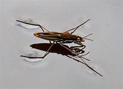
Walks magically on the surface film of the pond using water-repellent hairy feet!
Underwater Nymphs & Water Bugs
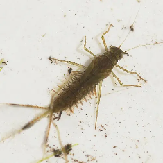
Three feathery tail filaments; crawls across submerged stones feeding on algae.
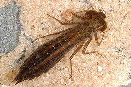
Fierce underwater predator with a hinged extendable jaw to catch tadpoles!
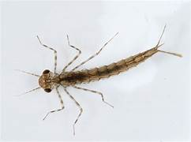
Slender body with three leaf-shaped gills at the tail tip for breathing underwater.
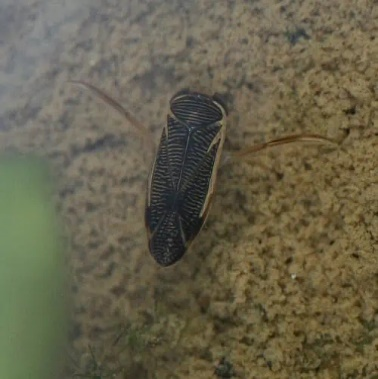
Rows through the water with long oar-like hind legs, carrying an air bubble.
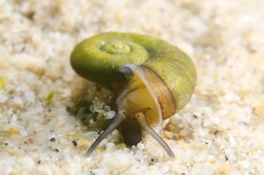
Flat, coiled shell shaped exactly like a ram's curved horn; grazes on pond plants.
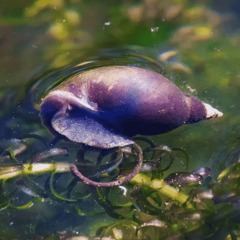
Pointed spiral shell; often seen gliding upside down on the underside of the surface.
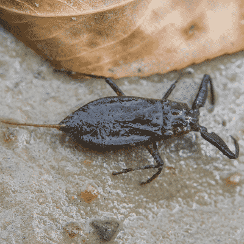
Looks like a dead leaf with pincer arms and a long breathing snorkel at its tail.
Frogs, Toads & Newts
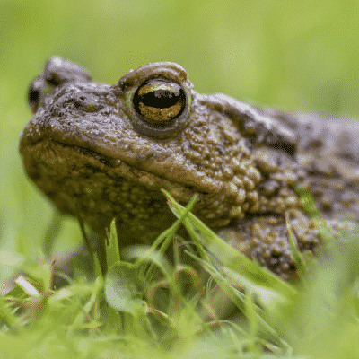
Warty brown skin and golden eyes; walks rather than hops through the grass.
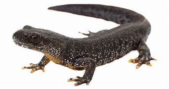
Spotted orange belly; swims gracefully in the spring breeding season.
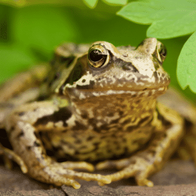
Smooth green-brown skin with long leaping hind legs and a dark eye mask.

Jelly-like clumps of transparent eggs floating in shallow water in early spring.
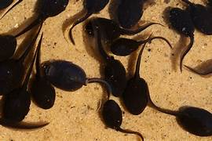
Little wriggling swimmers growing back legs first, then front legs!
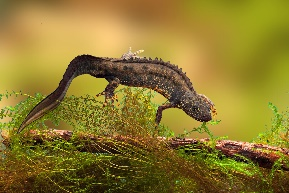
Rare mini 'dragon' with a jagged crest and bright orange belly with black blotches!
Did you spot something swimming in the pond?
Sketch your creature or write about what it was doing: